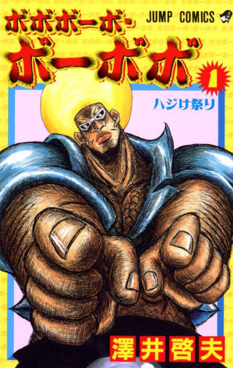

Bobobo-bo Bo-bobo
ボボボーボ・ボーボボ
Bo-bobo, a man with a blonde afro, fights an evil empire that shaves everyone bald, using his hair-based fighting style.
After the anime, read the manga from Chapter 179.
7.2AniList score
—Animeter, no votes yet
76episodes
Rate it or report where you stopped
Anime finished. Where does the manga pick up?
Start at Chapter179
The anime stops at episode 76 around the start of chapter 179 (volume 17); it was cut short, with no anime-original ending. The remaining arcs, including the finale, were never animated.
1178230 end
Season 1Start reading here
More like Bobobo-bo Bo-bobo
 Done8.3
Done8.3
 Done8.5
Done8.5
 Manga Ch. 11518.7
Manga Ch. 11518.7
 Unclear7.4
Unclear7.4
 Manga Ch. 2707.9
Manga Ch. 2707.9
 Manga Ch. 3408.9
Manga Ch. 3408.9
 Manga Ch. 377.7
Manga Ch. 377.7
 Unclear7.3
Unclear7.3
 Manga Vol. 97.1
Manga Vol. 97.1
 Original7.7
Original7.7
 Unclear7.5
Unclear7.5
 Unclear7.0
Unclear7.0